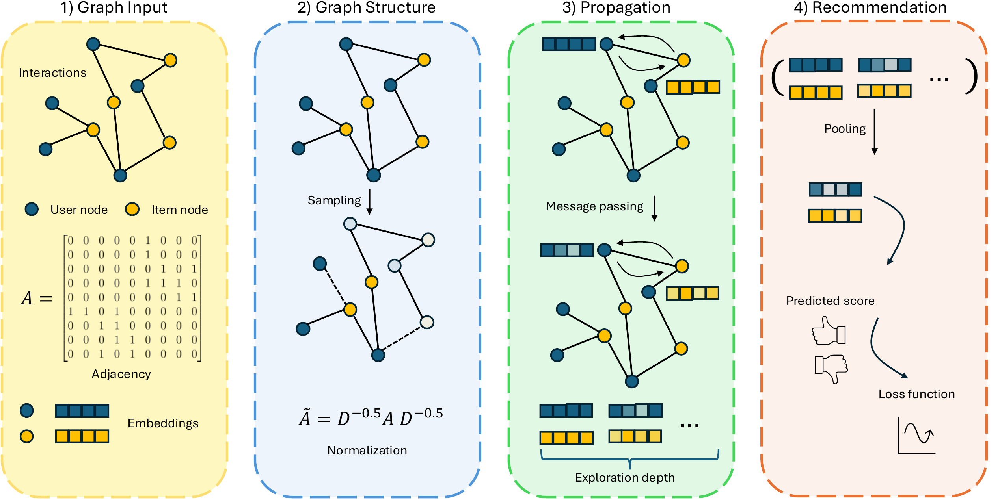
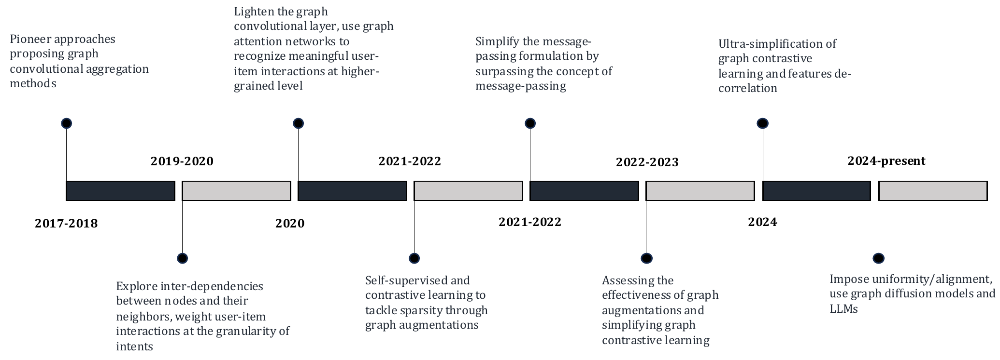
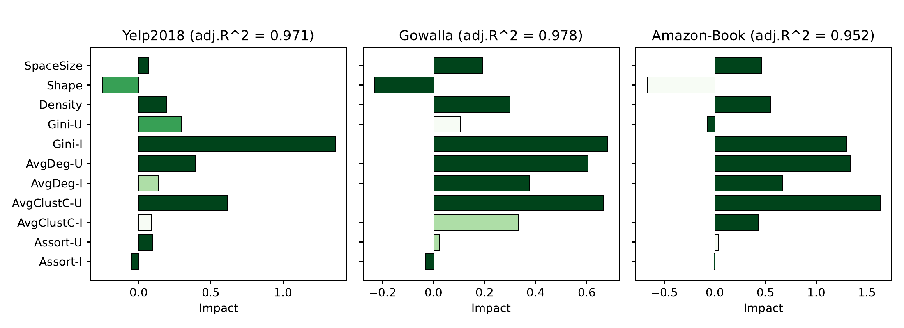
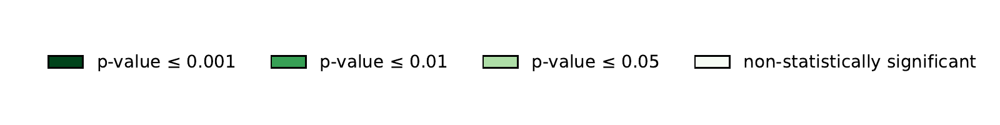

$\sigma_\mathcal{U},\ \sigma_\mathcal{I}$
Node degree
The number of items a user interacted with, or users an item received. A direct measure of user activity and item popularity; low degrees signal cold-start users and niche items.
A monograph
A Topological Perspective
Why do GNNs work so well for recommendation? We argue the answer lies in the topology of the user–item graph, and in how model architectures encode it.
October 2026
🎉 The monograph has just been accepted for publication in Foundations and Trends® in Information Retrieval (Emerald Publishing). It will be officially published in early 2027. In the meantime, the full manuscript is available on arXiv.
01 — Abstract
In recommender systems, user–item interactions can be modeled as a bipartite graph, where user and item nodes are connected by undirected edges. This graph-based view has motivated the rapid adoption of graph neural networks (GNNs), which often outperform collaborative filtering (CF) methods such as latent factor models, deep neural networks, and generative strategies. Yet, despite their empirical success, the reasons why GNNs offer systematic advantages over other CF approaches remain only partially understood.
This monograph advances a topology-centered perspective on GNN-based recommendation. We argue that a comprehensive understanding of these models' performance should consider the structural properties of user–item graphs and their interaction with GNN architectural design. To support this view, we introduce a formal taxonomy that distills common modeling patterns across eleven representative GNN-based recommendation approaches and consolidates them into a unified conceptual pipeline.
We further formalize thirteen classical and topological characteristics of recommendation datasets and reinterpret them through the lens of graph machine learning. Using these definitions, we analyze the considered GNN-based recommender architectures to assess how and to what extent they encode such properties. Building on this analysis, we derive an explanatory framework that links measurable dataset characteristics to model behavior and performance.
Taken together, this monograph re-frames GNN-based recommendation through its topological underpinnings and outlines open theoretical, data-centric, and evaluation challenges for the next generation of topology-aware recommender systems.
02 — Contents
Click on a chapter to see what it covers, or download it as a PDF.
Why do GNN-based recommenders perform so well? The chapter argues that answering this requires a deeper question: which topological characteristics of user–item graphs do these models capture, and do they influence performance? It introduces notation, the six reference datasets, and the eleven reference models.
Graphs, adjacency matrices and node features; the message passing algorithm (aggregation, update, layer combination); GCN and GAT; and link prediction as the encoder–decoder task of which recommendation is an instance.
A unified four-stage pipeline (graph input → graph structure → propagation → recommendation) and a formal taxonomy of eleven models: NGCF, DGCF, LightGCN, SGL, UltraGCN, GFCF, SVD-GCN, SimGCL, LightGCL, GraphAU, and XSimGCL. It also discusses normalization, sampling, exploration depth (same- vs different-type hops), layer combination and losses.
Space size $\Psi$, shape $\Phi$, density $\Delta$ and sparsity $\Lambda$, and user/item Gini coefficients $\text{K}_\mathcal{U}, \text{K}_\mathcal{I}$, with an empirical evaluation over MovieLens 1M, Yelp, Amazon Beauty, Amazon Books, Gowalla and LastFM.
Node degree, clustering coefficient, degree assortativity and degree distribution, each formally defined and then re-interpreted for recommender systems (user activity, item popularity, collaborative signal, look-ahead behavior, scale-free tendency). See the topology section below.
Each of the eleven models is re-written to expose which topological properties appear in its formulation. The node degree is explicitly encoded almost everywhere (via symmetric normalization), while clustering and assortativity are at most implicitly captured.
A four-step methodology: (i) generate many small datasets via node/edge-dropout graph sampling; (ii) compute classical and topological features; (iii) train and evaluate GNN recommenders; (iv) fit a linear explanatory model linking characteristics to performance, and learn how to read its coefficients.
Spectral methodologies (partition-based FPSR/FPSR+ and the topology of partitions; robustness of spectral denoising methods to sparsity) and multimodal & LLM-enhanced recommendation, with a topological analysis of how LLMRec reshapes the user–item graph.
Theoretical (expressiveness, over-smoothing and over-squashing, scalability), data-centric (scarcity, heterophily, generative topology modification with diffusion models and LLMs), task-specific (multimodal and sequential data) and methodological (benchmarking, reproducibility, beyond-accuracy evaluation) challenges.
03 — Topology, re-interpreted
Classical network-science measures become concrete recommendation concepts once applied to the user–item bipartite graph.
$\sigma_\mathcal{U},\ \sigma_\mathcal{I}$
The number of items a user interacted with, or users an item received. A direct measure of user activity and item popularity; low degrees signal cold-start users and niche items.
$\gamma_\mathcal{U},\ \gamma_\mathcal{I}$
The overlap between neighborhoods of same-type nodes (two hops away). High values mean many co-occurrences: the very essence of the collaborative filtering signal.
$\rho_\mathcal{U},\ \rho_\mathcal{I}$
Do users with similar activity (items with similar popularity) gather together in the projected graphs? A broader, look-ahead property that goes beyond two hops.
$P(d) \sim d^{-\theta}$
User–item graphs are scale-free: many low-degree nodes and a few hubs (very active users, very popular items), which tend to grow over time and feed popularity bias.
Key finding
GNN-based recommenders explicitly encode node degree in their formulations (through the $1/\sqrt{\sigma_u}\sqrt{\sigma_i}$ normalization), while clustering coefficient and degree assortativity are captured only implicitly, as emergent effects of multi-hop message passing.
| Dataset | $\sigma_\mathcal{U}$ | $\sigma_\mathcal{I}$ | $\gamma_\mathcal{U}$ | $\gamma_\mathcal{I}$ | $\rho_\mathcal{U}$ | $\rho_\mathcal{I}$ |
|---|---|---|---|---|---|---|
| MovieLens 1M | 175.317 | 335.506 | 0.065 | 0.055 | −0.046 | −0.040 |
| Yelp | 55.816 | 65.693 | 0.025 | 0.025 | 0.306 | 0.134 |
| Amazon Beauty | 36.130 | 26.449 | 0.021 | 0.025 | −0.039 | 0.021 |
| Amazon Books | 43.486 | 57.686 | 0.033 | 0.026 | 0.031 | −0.040 |
| Gowalla | 54.293 | 60.007 | 0.039 | 0.030 | 0.029 | −0.029 |
| LastFM | 33.411 | 56.247 | 0.064 | 0.031 | −0.029 | −0.120 |
| Dataset | $\Psi$ | $\Phi$ | $\Delta$ | $\text{K}_\mathcal{U}$ | $\text{K}_\mathcal{I}$ |
|---|---|---|---|---|---|
| MovieLens 1M | 1.65·107 | 1.914 | 0.060 | 0.507 | 0.548 |
| Yelp | 1.83·108 | 1.177 | 0.004 | 0.341 | 0.376 |
| Amazon Beauty | 9.70·107 | 1.327 | 0.018 | 0.254 | 0.332 |
| Amazon Books | 7.95·106 | 0.732 | 0.003 | 0.408 | 0.304 |
| Gowalla | 1.52·106 | 1.105 | 0.025 | 0.327 | 0.369 |
| LastFM | 5.33·106 | 1.683 | 0.035 | 0.155 | 0.484 |
Datasets after iterative k-core filtering, ordered by number of interactions. Values as reported in the monograph.
04 — Selected figures




05 — Take-home messages
Dropping non-linearities and feature transformations (NGCF → LightGCN) improves both accuracy and efficiency: the core strength lies in neighborhood aggregation.
It restricts most models to shallow depths and harms novelty and diversity, motivating proxies to iterative message passing.
Message passing favors high-degree nodes; performance correlates positively with item-side Gini, i.e., models reward popular items.
Density relates positively to performance, while shape (users/items ratio) relates inversely to it.
The factorization component and node degree are the most consistent predictors of performance, even for shallow models.
The ability to exploit clustering and assortativity is what often separates GNN architectures from one another.
Before costly training cycles, a topological analysis of the user–item graph can set realistic expectations and guide model selection: with low clustering and weak assortativity, a deep, complex GNN is unlikely to beat a simpler baseline.
06 — Authors
07 — Citation
The official Foundations and Trends® in Information Retrieval reference will appear here upon publication (early 2027). For now, please cite the arXiv preprint, together with our RecSys 2024 paper below.
@article{malitesta2025impact,
title = {On the Impact of Graph Neural Networks in Recommender Systems: A Topological Perspective},
author = {Malitesta, Daniele and Pomo, Claudio and Anelli, Vito Walter and Mancino, Alberto Carlo Maria and Bellog{\'i}n, Alejandro and Di Noia, Tommaso},
journal = {arXiv preprint arXiv:2512.07384},
year = {2025},
eprint = {2512.07384},
archivePrefix = {arXiv},
primaryClass = {cs.IR},
url = {https://arxiv.org/abs/2512.07384}
}Please also cite our RecSys 2024 paper
This monograph builds upon and extends our previous work, which first introduced the topology-aware evaluation of GNN-based recommender systems and the explanatory framework. If you use or refer to this monograph, please also cite: A Novel Evaluation Perspective on GNNs-based Recommender Systems through the Topology of the User-Item Graph (RecSys 2024).
@inproceedings{malitesta2024novel,
title = {A Novel Evaluation Perspective on GNNs-based Recommender Systems through the Topology of the User-Item Graph},
author = {Malitesta, Daniele and Pomo, Claudio and Anelli, Vito Walter and Mancino, Alberto Carlo Maria and Di Noia, Tommaso and Di Sciascio, Eugenio},
booktitle = {Proceedings of the 18th ACM Conference on Recommender Systems (RecSys '24)},
pages = {549--559},
publisher = {ACM},
year = {2024},
doi = {10.1145/3640457.3688070},
url = {https://dl.acm.org/doi/10.1145/3640457.3688070}
}